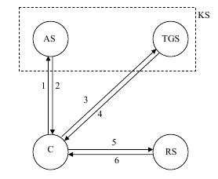

Симметрик калитли криптографик алгоритмлар ёрдамида маҳфий алоқани ташкил килувчи протоколлар
Ушбу протоколларда ахборот алмашинувчи субъектлар бўлган А ва В томонлар умумий симметрик k-калитга эга деб қаралади. Бу протоколларни ўз навбатида учинчи бир ишончли томоннинг иштирок этиши ёки этмаслигига кўра икки гурухга бўлиш мумкин.
Учинчи ишончли томон иштирок этган холатдаги протоколларни кўриб ўтамиз.
Бунинг учун қуйидаги шартли белгилашларни киритамиз:
Е – шифрлаш алгоритми;
tA – А томоннинг вақт меткаси;
rA – А томон тасодифий сони;
nA– А томон генерация қилиш тартиб рақами;
Z – В томон идентификацион рақами;
kAB – иккала томонга ҳам маълум калит;
С – учинчи ишончли томон (калитлар тақсимот маркази ёки инсон).
Протокол қадамлар кетма-кетлиги:
1) А томон В томон билан алоқа ўрнатиш учун С га мурожаат қилади ва сеанс калитни сурайди;
2) С тасодифий сеанс калитини генерация қилади ва бу калитни икки нусхада шифрлаб А томонга узатади;
3) А томон ўзига тегишли сеанс калитини дешифрлайди;
4) А томон шифрланган сеанс калитининг иккинчи нусхасини В томонга узатади;
5) В томон ўзининг калитини дешифрлайди;
6) А ва В томонлар маҳфий алоқа ўрнатишда ушбу ҳосил қилинган сеанс калитдан фойдаланадилар.
Протоколлар ҳам рақиб томонидан бўладиган ҳар хил (актив ва пассив) хужумлардан холи эмас.
Қадамлари баён қилинган протоколнинг камчилиги шундаки, ҳар бир калит алмашишда иштирок этувчи учинчи томон С мазкур тизимнинг нозик нуқтаси хисобланади. Агарда бирор камчилик кузатилса, бутун тизим ишдан чиқади.
А ва В томонлар олдиндан маҳфий маълумотга эга. kAB маҳфий калит бўлса, у ҳолда калитни узатишда, томонлар бир томонлама узатишдан фойдаланишлари мумкин
А В: ЕkAB(rA,
tA,
Z)
В: ЕkAB(rA,
tA,
Z)
В томон умумий калит ёрдамида бу маълумотни дешифрлайди, rA сеанс калит вазифасини бажаради.
Протоколни қисқача таҳлили:
1. Вақт меткаси узатилмаса, рақиб томон айнан шу маълумотни қайта узатиши мумкин;
2. В томоннинг идентификацион рақами кўрсатилмаса, рақиб бу маълумотни А томоннинг ўзига қайта узатиши мумкин ва натижада А томон маълумот В томондан келган ё келмаганлигини аниклай олмайди;
3. Сеанс калит f(rA, rВ) функция ёрадмида хисоблаб топилиши мумкин. rB – B томон тасодифий сони. Агар f функция сифатида бир томонли функциядан фойдаланилса, томонларнинг хеч бири натижавий калитни назорат килаолмайди.
4. Протоколда шифрлаш алгоритми урнига умумий калитга боғлиқ калитли хеш-функциядан фойдаланиш мумкин
А В:
rA
В:
rA hkAB(tA,
Z)
hkAB(tA,
Z)
бу
ҳолда, В томон маълумотни қабул қилиб олгач, калитли
хеш-функцияни у билади. Маълумотдан вақт меткасини ажратади, кейинги вазифа вақт
меткаси ва ўзининг идентификацион рақамини бирлаштириб ушбу калитли хеш-функция
ёрдамида хешланади. Ҳосил бўлган, hkAB(tA, Z) хеш қийматни қолган
rA hkAB(tA, Z) маълумотга XOR амалига
кўра қўшади.
Натижада rA сеанс калит
ҳосил бўлади.
hkAB(tA, Z) маълумотга XOR амалига
кўра қўшади.
Натижада rA сеанс калит
ҳосил бўлади.
Агар калитнинг янгилигига ишонч талаб этилиб, умумий синхрон вақтга эга бўлинмаса, у ҳолда вақт меткасини генерация қилиш тартиб рақами билан алмаштириш мумкин. Протокол ўз навбатида ўзгаради. В томон ўзининг nB тасодифий сонини ҳосил қилиб уни А томонга узатади
В А:
nB
А:
nB
А томон бу сонни қабул қилиб, унга ўзи ҳосил килган сеанс калитни ва В томоннинг идентификацион рақамини бирлаштириб иккала томон учун умумий калит ёрдамида шифрлайди ва В томонга узатади
А В:
ЕkAB(rA,
nB, Z)
В:
ЕkAB(rA,
nB, Z)
В томон nB ва Z ни текшириб, rA сеанс калитнинг туғрилигига ишонч ҳосил қилади.
Сеанс калитини генерация қилишда иккала томон биргаликда катнашган холат учун ушбу протоколни шундай узгартириш мумкин.
А ва В томонлар rA ҳамда rВ сонларидан фарқли тасодифий nА ва nB сонларни генерация қиладилар, сўнгра қуйидаги қадамлар кетма-кетлигини бажарилади,
1) В томон ўзининг nB тасодифий сонини А томонга узатади
В А:
nB
А:
nB
2) А томон ушбу сонни қабул қилиб, ўзаро аутентификацияни таъминлаш ҳамда сеанс калитини биргаликда ҳосил қилиш мақсадида В томонга ушбуни узатади
А В: ЕkAB(rA,
nА, nB,
Z)
В: ЕkAB(rA,
nА, nB,
Z)
3) В томон маълумотни дешифрлаб, nB тасодифий сонни текширади. Тўғрилигига ишонч ҳосил килгач, А томонга rB, nА, nB, W ларни умумий бўлган калит билан шифрлаб узатади (W – А томон идентификацион рақами)
В А: ЕkAB(
rB,
nА, nB,
W)
А: ЕkAB(
rB,
nА, nB,
W)
Натижада, ҳар бир томон умумий калитни олдиндан келишиб олинган бирор функция ёрдамида k=f(rA, rВ) ҳисоблаб топиши мумкин.
Аутентификация жараёнида учинчи тарафни жалб этиш билан фойдаланувчиларни аутентификациялашни таъминловчи протоколларнинг машхур намуналари сифатида Нидхэм ва Шредернинг маҳфий калитларни тақсимлаш протоколини ва Kerberos протоколини кўрсатиш мумкин.
Kerberos бир-бирига етарли даражада ишонмайдиган тармоқ абонентларининг аутентификациялашни таъминлайди, яъни Kerberos ишлашида шартли “душман” қуйидаги ҳаракатларни бажаришлари мумкин:
- ўзини тармоқ уланишининг эътироф этилган тарафларидан бири деб кўрсатиш;
- уланишда иштирок этаётган компьютерларнинг биридан фойдалана олиш;
- ҳар қандай пакетни ушлаб қолиш, уларни модификациялаш ёки иккинчи марта узатиш.
Kerberos протоколида хавфсизлик таъминоти юқорида келтирилган шартли “душман”нинг ҳаракатлари натижасида пайдо бўладиган ҳар қандай муаммоларнинг бартарафланишини таъминлайди.
Kerberos протоколи олдинги асрнинг 80-йилларида яратилган ва шу пайтгача бешта версияда ўз аксини топган.
Kerberos TCP/IP тармоқлари учун яратилган бўлиб, протокол катнашчиларининг учинчи (ишонилган) тарафга ишонишлари асосига курилган. Тармоқда ишловчи Kerberos хизмати ишонилган воситачи сифа- тида ҳаракат қилиб, тармоқ ресурсларидан мижознинг (мижоз иловасининг) фойдалинишини авторизациялаш билан тармоқда ишончли аутентифика- циялашни таъминлайди.
Kerberos хизмати алохида маҳфий калитни тармоқнинг ҳар бир субъекти билан бўлишади ва бундай маҳфий калитни билиш тармоқ субъекти хакикийлигининг исботига тенг кучлидир. Kerberos асосини Нидхем-Шредернинг учинчи ишонилган тараф билан аутентификациялаш ва калитларни тақсимлаш протоколи ташкил этади. Нидхем-Шредер протоколининг ушбу версиясини Kerberosга татбикан курайлик. Kerberos протоколида алоқа килувчи иккита тараф ва калитларни тақсимлаш маркази KDC(Key Distribution Center) вазифасини бажарувчи ишонилган сервер KS иштирок этади.
Чакирувчи объект А оркали, чакирилувчи объект В оркали белгила- нади. Сеанс катнашчилари, мос ҳолда IdA ва IdB ноёб идентификаторларга эга. А ва В тарафлар, ҳар бири алохида, ўзининг маҳфий калитини сервер KS билан бўлишади.
Айтайлик, А тараф В тараф билан ахборот алмашиш мақсадида сеанс калитини олмокчи. А тараф тармоқ оркали сервер KS га IdA ва IdB иденти- фикаторларни юбориш билан калитлар тақсимланиши даврини бошлаб беради:
A KS: IdA,
IdB
KS: IdA,
IdB
Сервер KS вақтий белги T, таъсир муддати L, тасодифий калит K ва идентфикатор IdA бўлган хабарни генерациялаб, бу хабарни В тараф билан булинган маҳфий калит ёрдамида шифрлайди.
Сўнгра сервер KS В тарафга тегишли вақтий белги T, таъсир муддати L, тасодифий калит K, идентификатор IdВ ни олиб уни А тараф билан бўлинган маҳфий калит ёрдамида шифрлайди. Бу иккала шифрланган маълумотларн А тарафга жунатади.
KS А:
ЕА (Т, L, K, IdB), EB
(T, L, K,
IdA)
А:
ЕА (Т, L, K, IdB), EB
(T, L, K,
IdA)
A тараф биринчи маълумотни ўзининг маҳфий калити билан дешифрлайди ва ушбу маълумот калитлар тақсимотининг олдинги муолажасининг қайтарилиши эмаслигига ишонч ҳосил қилиш мақсадида вақт белгиси Т ни текширади. Сўнгра А тараф ўзининг идентификатори IdA ва вақт белгиси билан хабарни генерациялаб, уни сеанс калити K ёрдамида шифрлайди ва В тарафга узатади. Ундан ташкари, А тараф В тараф учун KS дан В тараф калити ёрдамида шифрланган хабарни жўнатади:
А В:
ЕК
(IdА, Т), EB
(T, L, K, IdA)
В:
ЕК
(IdА, Т), EB
(T, L, K, IdA)
Бу маълумотни фақат В тараф дешифрлаши мумкин. В тараф вақт белгиси Т, таъсир муддати L, сеанс калити К ва идентификатор IdA ни олади. Сўнгра В тараф сеанс калит К ёрдамида маълумотнинг иккинчи кисмини дешифрлайди. Маълумотнинг иккала кисмидаги T ва IdA қийматларининг мос келиши А нинг В га нисбатан хакикийлигини тасдиклайди.
Хакикийликни ўзаро тасдиқлаш мақсадида В тараф вақт белгиси Т плюс 1 дан иборат маълумот яратади, уни К калит ёрдамида шифрлайди ва А тарафга жунатади.
В А: ЕК (Т+1)
А: ЕК (Т+1)
Агар бу маълумот дешифрлангандан кейин А тараф кутилган натижани олса, у алоқа тармогининг бошқа тарафида хакикатан В турганлигига ишонч ҳосил қилади.
Бу протокол барча қатнашувчиларнинг соатлари сервер KS соатлари билан синхронланганида муваффакиятли ишлайди. Таъкидлаш лозимки, бу протоколда А тарафнинг В тараф билан алоқа урнатишга ҳар бир хохишида сеанс калитини олиш учун KS билан алмашинув зарур бўлади.
Умуман Kerberos тизимида фойдаланувчини идентификациялаш ва аутентификациялаш жараёнини қуйидагича тавсифлаш мумкин (1-расм).

1-расм. Kerberos протоколининг ишлаш схемаси
бу ерда:
KS - Kerberos тизими сервери
AS - аутентификация сервери
TGS - мандатларни ажратиш хизмати сервери
RS - ахборот ресурслари сервери
C - Kerberos тизимининг мижози
Мижоз С, тармоқ ресурсидан фойдаланиш мақсадида аутентификация сервери AS га сўров йўллайди. Сервер AS фойдаланувчини унинг исми ва пароли ёрдамида идентификациялайди ва мижозга мандат ажратиш хизмати сервери TGSдан (Ticket Grating Service) фойдаланишга мандат юборади.
Ахборот ресурсларининг муайян мақсадли сервери RS дан фойдаланиш учун мижоз С TGS дан мақсадли сервер RS га мурожаат қилишга ман- дат сурайди. Ҳамма нарса тартибда бўлса TGS керакли тармоқ ресурслари- дан фойдаланишга рухсат бериб, клиент С га мос мандатни юборади.
Kerberos тизими ишлашининг асосий қадамлари (1-расмга каралсин):
1. C>AS - мижоз С нинг TGS хизматига мурожаат қилишга рухсат сўраб сервер AS дан сурови.
2. AS>C - сервер AS нинг мижоз С га TGS хизматидан фойдаланишга рухсати (мандати).
3. C>TGS - мижоз С нинг ресурслар сервери RS дан фойдаланишга рухсат (мандат) сураб, TGS хизматидан сурови.
4. TGS>C - TGS хизматининг мижоз С га ресурслар сервери RS дан фойдаланишига рухсати (мандати).
5. C>RS - сервер RS дан ахборот ресурсининг (хизматнинг) сурови.
6. RS>C - сервер RS нинг хакикийлигини тасдиклаш ва мижоз С га ахборот ресурсини (хизматни) такдим этиш.
Мижоз билан сервер алоқасининг ушбу модели фақат узатиладиган бошқарувчи ахборотнинг конфиденциаллиги ва яхлитлиги таъминланганида ишлаши мумкин. Ахборот хавфсизлигини катъий таъминламасдан AS, TGS ва RS серверларга мижоз С суров юбора олмайди ва тармоқ хизматидан фойдаланишга рухсат ололмайди.
Ахборотнинг ушлаб қолиниши ва рухсатсиз фойдаланиши имкониятларини бартараф этиш мақсадида Kerberos тармоқда ҳар қандай бошқариш ахбороти узатилганида маҳфий калитлар комплексини (мижознинг маҳфий калити, сервернинг маҳфий калити, мижоз-сервер жуфтининг маҳфий сеанс калитлари) куп марта шифрлашни ишлатади. Kerberos шифрлашнинг турли алгоритмларидан ва хэш-функциялардан фойдаланиши мумкин.
Kerberos тизимида ишонч хужжатларининг икки туридан фойдаланилади: мандат (tricket) ва аутентификатор (authentifacator).
Мандат серверга мандат берилган мижознинг идентификацион маълумотларини хавфсиз узатиш учун ишлатилади. Унинг таркибида ахбо- рот ҳам бўлиб, ундан сервер мандатдан фойдаланаётган мижознинг хакикий эканлигини текширишда фойдаланиши мумкин.
Аутентификатор мандат билан бирга кўрсатилувчи кушимча атрибут(аломат).
Kerberos протоколининг ўзига қуйидаги катор талаблар қуйилади:
-
Kerberos хизмати хизмат қилишдан воз кечишга йўналтирилган хужумлардан химояланиши шарт;
-
вақт белгиси аутентификация жараёнида катнашиши сабабли, тизимдан фойдаланувчиларининг барчаси учун тизимли вақтни синхронлаш зарур;
-
Kerberos паролни саралаш оркали хужум қилишдан химояламайди. Муаммо шундаки, KDC да сақланувчи фойдаланувчи калити унинг паролини хэш-функция ёрдамида қайта ишлаш натижасидир. Паролнинг бўшлигида уни саралаб топиш мумкин.
-
Kerberos хизмати рухсатсиз фойдаланишининг барча турларидан ишончли химояланиши шарт;
-
мижоз олган мандатлар, ҳамда маҳфий калитлар рухсатсиз фойдаланишдан ҳимояланиши шарт.
Юқорида келтирилган талабларнинг бажарилмаслиги муваффақиятли ҳужумга сабаб бўлиши мумкин.
Хозирда Kerberos протоколи аутентификациялашнинг кенг тарқалган воситаси ҳисобланади. Kerberos турли криптографик схемалар, хусусан очиқ калитли шифрлаш билан биргаликда ишлатилиши мумкин.